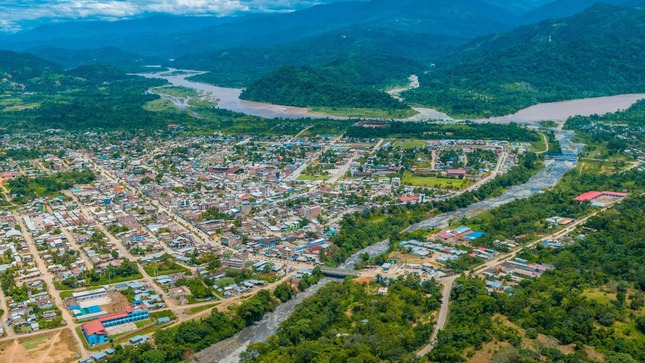

El distrito de Pichari es uno de los quince que conforman la provincia de La Convención, ubicada en el departamento del Cuzco en el Sur del Perú. Limita por el Norte con el distrito de Pangoa, (Satipo, Junín); por el Sur con el distrito de Quimbiri; por el Este con el distrito de Echarate; por el Oeste con el río Apurímac y con los distritos de Sivia y Llochegua (Huanta, Ayacucho). Para la Iglesia católica el distrito forma parte del Vicariato apostólico de Puerto Maldonado,1 pero actualmente es atendido desde Sivia, que depende de la Arquidiócesis de Ayacucho. Fue creado
mediante Ley del 7 de agosto de 1995 durante el gobierno del Presidente Alberto Fujimori antes fue una de las comunidades del distrito de kimbiri, es la razón por la que llaman Kimbiri corazón del Vraem. Su capital es el poblado de Pichari situado a los 614 m s. n. m. Las principales poblaciones del Distrito son Pichari Centro, Alto Pichari, Bajo Pichari (donde se encuentra un Batallón del Ejército del Perú y una delegación de la ONU), Otari San Martín (donde existe una comunidad de Asháninkas).